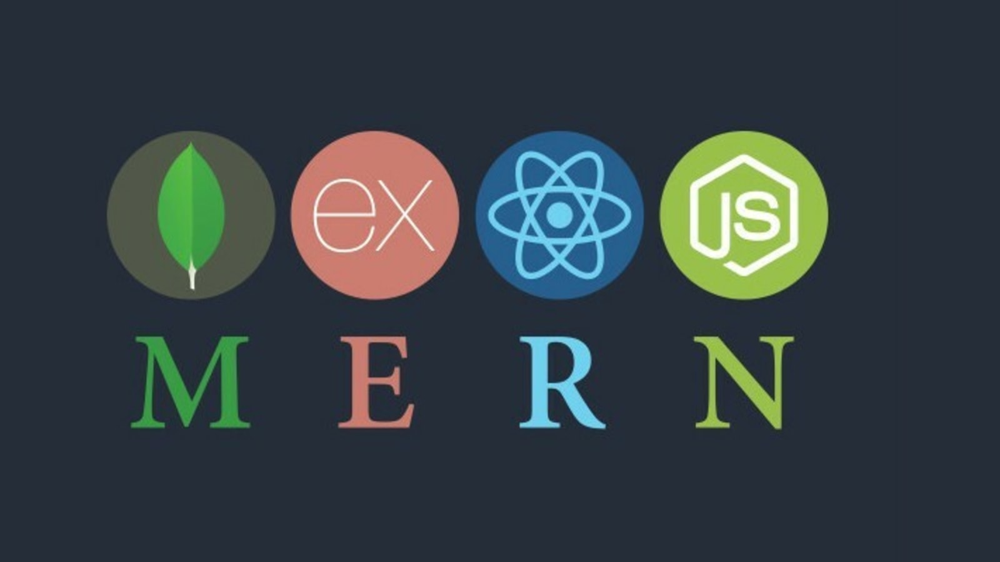

Desarrollo Web

HTML. La estructura
El Lenguaje de Marcado de Hipertexto (HTML) es el código que se utiliza para estructurar y desplegar una
página web y sus contenidos. HTML nos provee etiquetas para describir los diferentes tipos de contenidos
(elementos) de nuestra web. Gracias a ello, el navegador podrá comprender el contenido enviado por el
servidor y representarlo en pantalla.
Dentro de estos elementos contamos se encuentran:
- Párrafos de texto <p>
- Textos jerárquicos de apartados <h1> <h2>
- Imágenes <img>
- Enlaces a recursos u otros apartados de la web <a>
- Formularios <form> con cajas de texto, desplegables, opciones, botones de envío…
CSS. Estilo y apariencia.
CSS (Cascading Style Sheets) es un lenguaje de hojas de estilo, es decir, te permite aplicar estilos de
manera selectiva a elementos en documentos HTML.
Con CSS asignamos fuentes y color a textos o cajas, modificamos tamaños, añadimos imágenes de fondo,
definimos márgenes o incluso podemos cambiar completamente la apariencia de un elemento HTML como una
lista para convertirla en una barra o menú de navegación.
Gracias a CSS también podemos hacer que nuestra página web se vea correctamente en otros dispositivos
como móviles o tabletas. Es lo que se conoce como diseño web adaptativo o responsive.
JavaScript. Funcionalidad y dinamismo
JavaScript es un lenguaje de programación del lado del cliente que te permite implementar dinamismo y
funcionalidad a nuestra página web.
Además del contenido estático, con JavaScript podremos
- Mostrar actualizaciones de contenido.
- Vincular eventos dinámicos a elementos HTML (clic en botones, accesos a menús, filtros en
formularios…)
- Almacenar datos en variables.
- Usar funciones complementarias como gráficos o mapas mediante APIS de terceros.
- Acceder a conjuntos de datos públicos o privados.
MEAN Stack

Últimamente está muy de moda algo llamado MEAN o más concretamente del "Stack MEAN" para desarrollo web
basado en JavaScript, del que seguramente habrás oído hablar.
Como ya he comentado en otras ocasiones, el lenguaje JavaScript se está haciendo un hueco cada vez mayor
en el mercado del desarrollo de software. Aquel humilde lenguaje que empezó en los años '90 como una vía
sencilla de validar formularios, se ha convertido en parte fundamental del desarrollo de todo tipo de
aplicaciones: web, móviles, bases de datos, administración de sistemas...
Esta proliferación ha llevado a JavaScript a todas las capas de desarrollo, empezando por el lado
cliente en sus inicios (el navegador), pero yendo también al servidor y a la capa de almacenamiento. En
cualquiera de esos puntos podemos encontrar JavaScript listo para ser utilizado.
Gracias a eso, hoy en día es posible crear aplicaciones distribuidas utilizando el mismo lenguaje
JavaScript en todas sus fases y capas. A este concepto y las tecnologías que lo posibilitan se les ha
bautizado con el nombre de MEAN, acrónimo formado por las iniciales de las cuatro tecnologías
principales que entran en juego: MongoDB, Express, Angular y Node.js.
MongoDB

MongoDB es una de las bases de datos NoSQL más sorprendentes que se conoce y está orientada a documentos.
Una base de datos MongoDB se puede utilizar para almacenar los datos de la aplicación, cada registro es
un documento que consta de pares clave-valor que son similares a los objetos JSON (JavaScript Object
Notation). MongoDB es flexible y permite a sus usuarios crear esquemas, bases de datos, tablas, etc sin
los requerimientos de una pesada base de datos SQL.
Express

Express JS es un marco que se ha superpuesto en la parte superior de Node JS y se puede utilizar para
crear el backend del sitio web con la ayuda de las estructuras y funciones de Node JS. Sin embargo, como
Node JS está destinado a ejecutar JavaScript del lado servidor, pero no para desarrollar sitios web,
Express JS está destinado justo a esto, a crear sitios web.
Angular

Aunque evidentemente en el navegador podríamos desarrollar todo el código usando solamente HTML, CSS y
JavaScript puro, qué duda cabe que disponer de alguna biblioteca que nos proporcione muchas
funcionalidades ya hechas, facilita mucho las cosas. Es algo parecido a lo que pasa con Node.js y
Express.js: el primero puede funcionar sin el segundo, pero seríamos tontos si no utilizásemos este
último.
En el navegador desde siempre han existido bibliotecas de funciones que nos facilitan mucho la vida. La
más conocida y utilizada es sin duda jQuery, que también fue una de las primeras en ser adoptada
universalmente. En los últimos años se ha trasladado al navegador el patrón de diseño denominado MVC
(Modelo-Vista-Controlador) y han surgido cientos de bibliotecas especializadas en facilitarnos su uso.
De entre todas ellas destaca Angular que ha tomado un especial protagonismo en los últimos tiempos,
entre otras muchas cosas porque está creada y soportada por Google, es gratuita y de código abierto.
Node.js

Este es un entorno de ejecución para JavaScript que puede permitirle ejecutar JavaScript del lado servidor y no en un navegador. Un interesante concepto a tener en cuenta en Node.js es el concepto de módulo, recursos que pueden ser más o menos simples o complejos en funcionalidad y que contiene un código JavaScript que podemos reutilizar en toda nuestra aplicación. Estos módulos tienen su propio contexto y no interfieren entre sí. Esto es una notable ventaja pues podemos crear nuestro proyecto a medida sin complicaciones, sorpresas ni comportamientos inesperados.
MERN Stack

El stack MERN utiliza JavaScript como único lenguaje, por ello no tendremos dificultades al familiarizarnos con cualquiera de estas tecnologías, las cuales son mongoDB, Express, React y Node.js. La ventaja que encontramos al utilizar este stack en específico, es que nos permite profundizar en un solo lenguaje de programación, logrando así, enfocar y reforzar nuestros conocimientos para especializarnos en JavaScript y con ello ser más productivos.
React.js

React es una reconocida biblioteca (aunque en la práctica se utiliza más como si fuera un framework) creada y mantenida por Facebook, que nos va a permitir desarrollar el Frontend de nuestra aplicación. Una de las ventajas que ganamos al usar React es poder codificar en JS y crear componentes de interfaz de usuario de una manera limpia, organizada la cual nos permitirá que la interacción entre usuarios y la aplicación sea mucho más efectiva.